Os papéis da dieta, especiação e extinção na diversificação de aves e na montagem de redes de frugivoria
Gustavo Burin FERREIRA
Orientador: Tiago Bosisio QUENTAL
Co-orientador: Paulo R. GUIMARÃES Jr
02 de Outubro de 2017
Estrutura
- Introdução
- Capítulo 1: Dieta + Diversificação
- Capítulo 2: Performance de Métodos
- Capítulo 3: Diversificação + Redes
- Conclusões
Macroevolução
Especiação
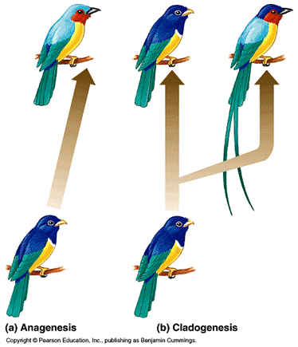
Extinção

Por que aves?

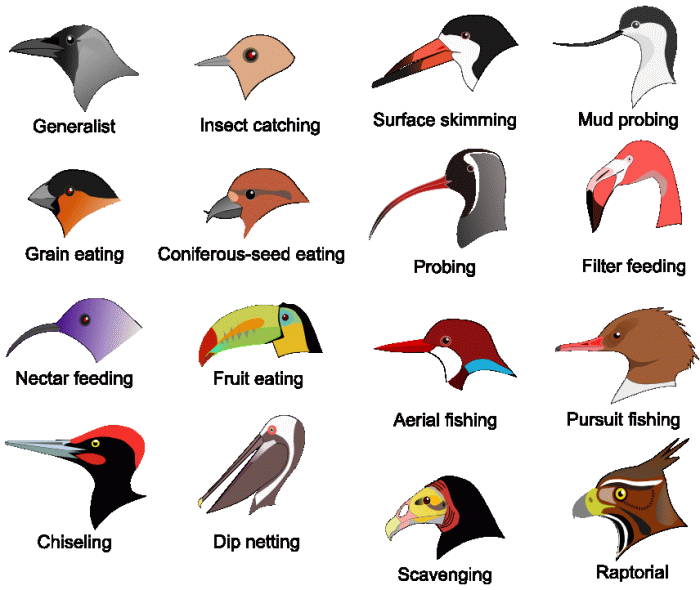
SEED DISPERSAL
Objetivos
- Entender os efeitos de diferentes dietas na diversificação do grupo
- Testar a performance de métodos amplamente utilizados
- Analisar a relação entre a diversificação e o papel ecológico
Capítulo 1
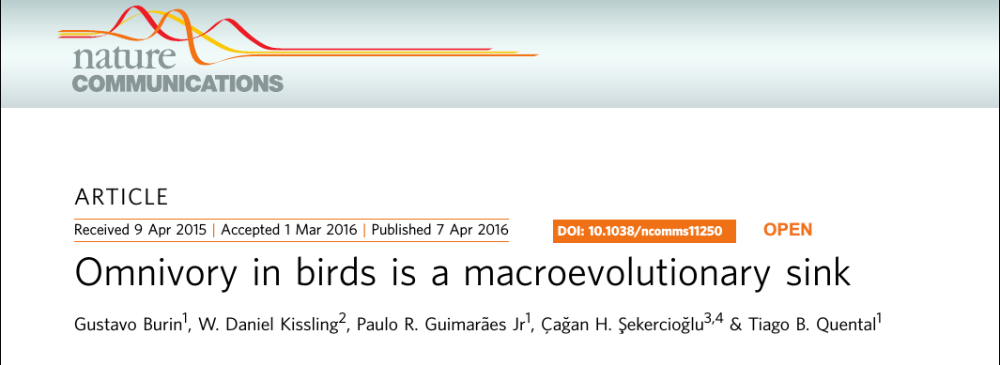
Como?
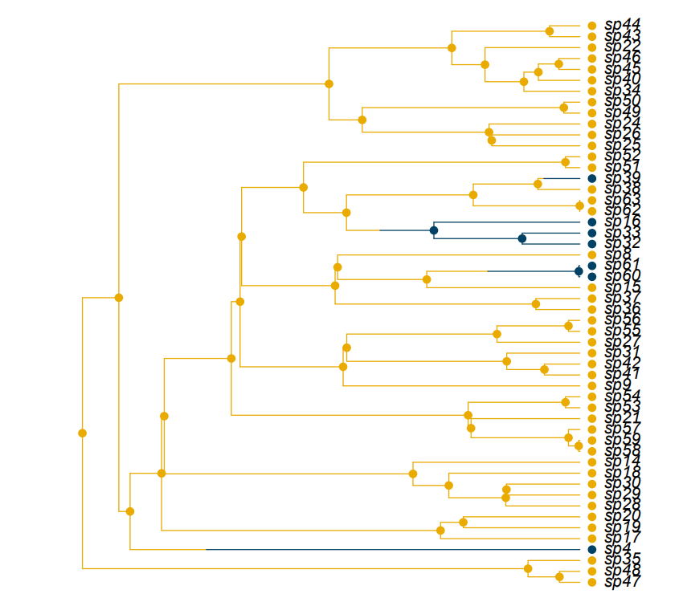
Como?
- Incorporar incerteza filogenética (200 árvores)
- Especiação, extinção e transições para 9 dietas (93 parâmetros)
- Abordagem Bayesiana: 1500000 iterações
- 2 meses de processamento
1150 espécies de onívoros
Resumo - Resultados
- Net diversification menor em onívoros
- Menor especiação e/ou maior extinção
- Transições preferenciais para onivoria
Recursos abundantes/previsíveis

Recursos abundantes/previsíveis
Recursos escassos/imprevisíveis
Recursos escassos/imprevisíveis
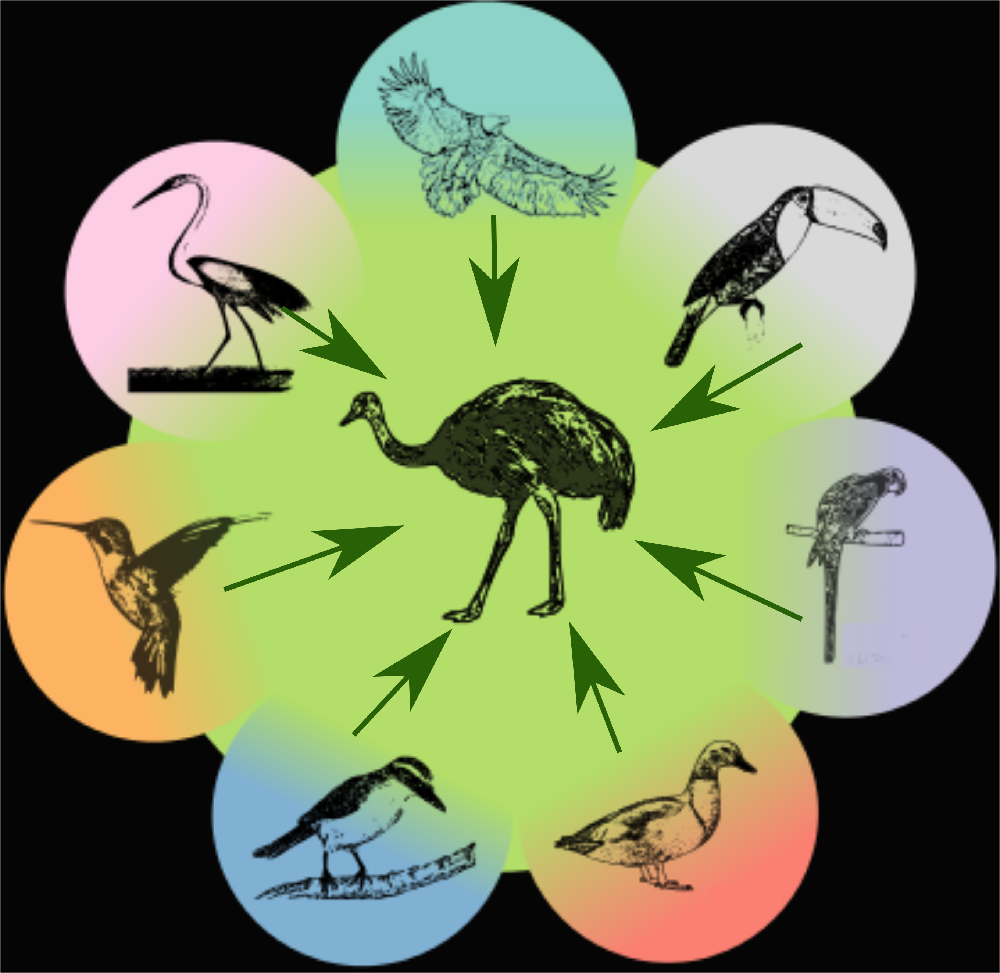
Capítulo 2
How well can we estimate diversity dynamics for clades in diversity decline?
Gustavo BURIN; Laura ALENCAR; Jonathan CHANG; Michael ALFARO; Tiago QUENTAL
Segunda revisão na revista Systematic Biology
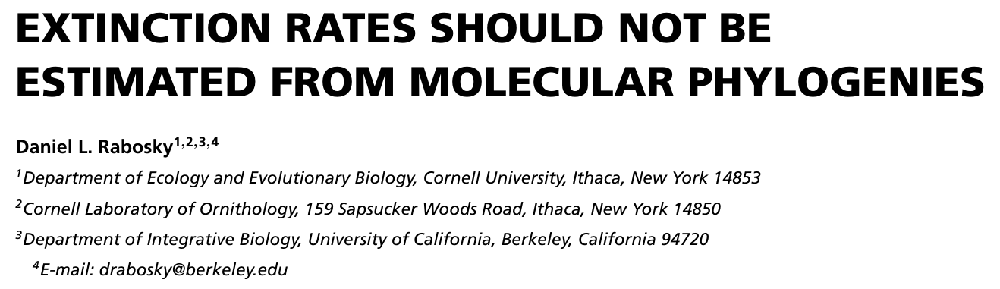 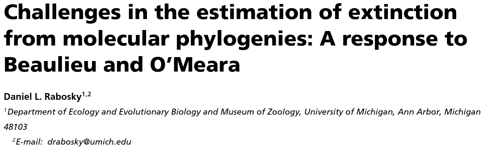
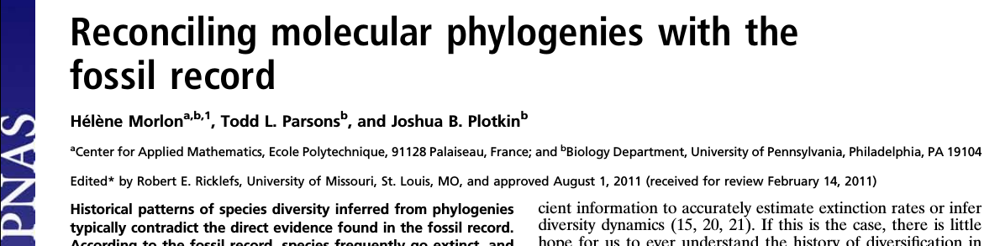
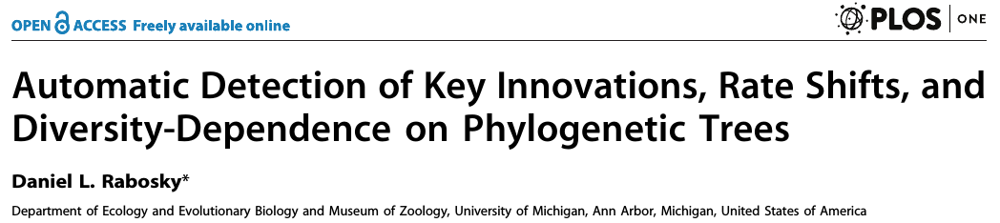
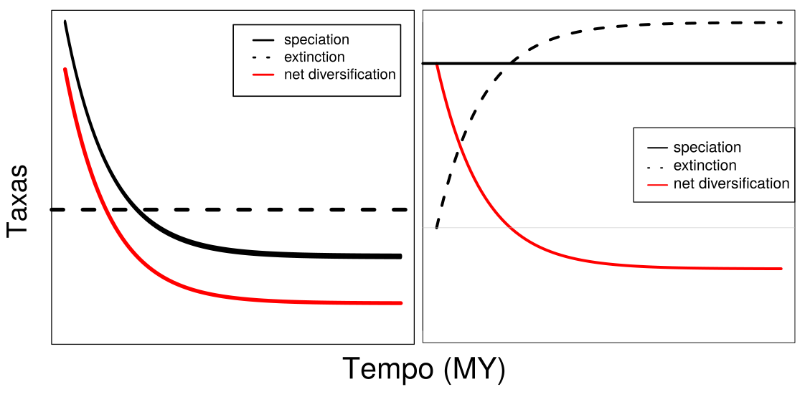
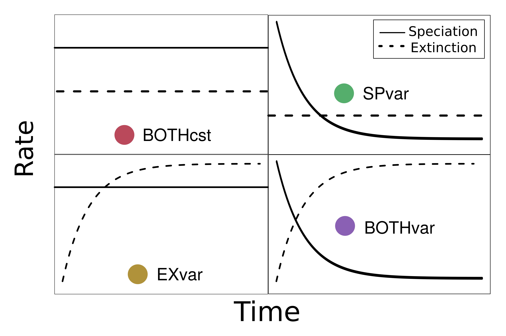
Árvores empíricas
- 214 filogenias
- 5 grandes grupos de vertebrados
- Representam cenários mais complexos
- Um modelo a mais: BOTHexp
Mensagens
- Expandimos o espaço de parâmetros estudado
- Ambos os modelos estimam as taxas bem no presente
- Momento do declínio tem pouca influência
Implicações práticas
- Dificuldade em detectar variação na extinção
- Estimativas ruins na raiz: reconstrução da história é falha
- Discordam nas empíricas
- Queda na especiação não parece ser tão comum
- \(\gamma\) pode auxiliar
Capítulo 3
The role of diversification rates on the assembly of frugivory networks
Gustavo BURIN; Paulo GUIMARÃES; Tiago QUENTAL
Espécies mais centrais pertencem a linhagens mais estáveis/confiáveis
Especiação
Extinção
Testes
- Epsilon (extinção/especiação)
- “Pura” e z-score (pool global vs. pool local)
- 6 co-fatores: Prec. Anual, Saz. Prec., Temp. Média Anual, Saz. Temp., Mod., Aninh.
- PGLS
Closeness ~ Epsilon * Prec.An./Saz.Prec.
Espécies mais menos estáveis não são centrais
Interação positiva com precipitação total e negativa com sazonalidade de precipitação
Resultados
- Relação negativa: espécies menos estáveis/“confiáveis” não são centrais (species sorting)
- Relação modulada por disponibilidade hídrica (total e sazonal)
- Pool global vs. pool local
- Redes quantitativas vs. redes binárias
Discussão
- Disponibilidade hídrica: fenologia
- Species sorting: filtro global (“tempo absoluto”)
- Trópicos: Tradeoff entre número de interações e número de espécies (maior riqueza)
FENOLOGIA
Mensagens finais - cap 1
- Onívoros parecem ser um ralo macroevolutivo
- Diversidade de onívoros mantida por transições
- Diversidade regulada por mosaico espaço-temporal de seleção
Mensagens finais - cap 2
- BAMM e RPANDA estimam bem no presente
- Variação na extinção: reconstrução errada
- Cenários complexos: métodos discordam
Mensagens finais - cap 3
- Espécies centrais vem de linhagens mais estáveis em regiões temperadas
- Montagem influenciada pela disponibilidade de água (“tropicalização”)
- Trópicos: compensação de intimidade por quantidade